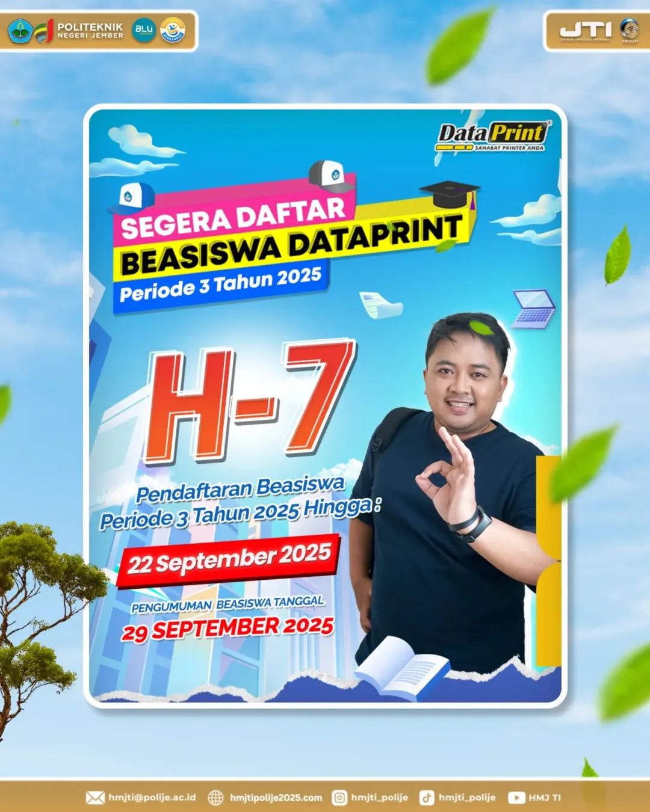
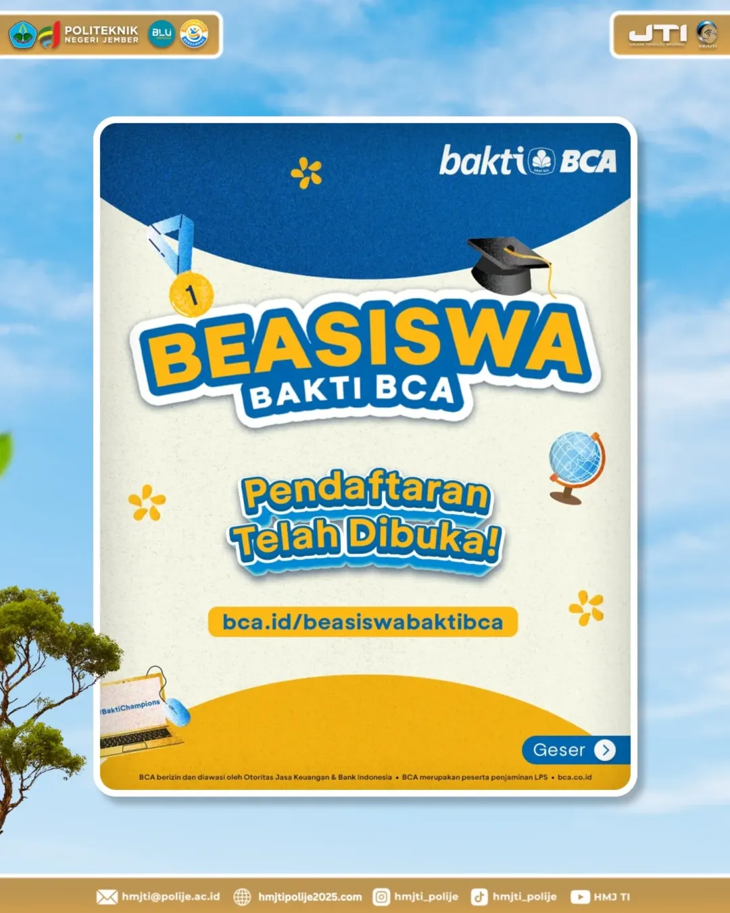
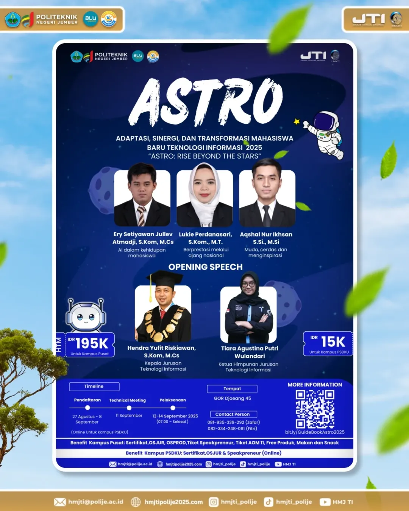
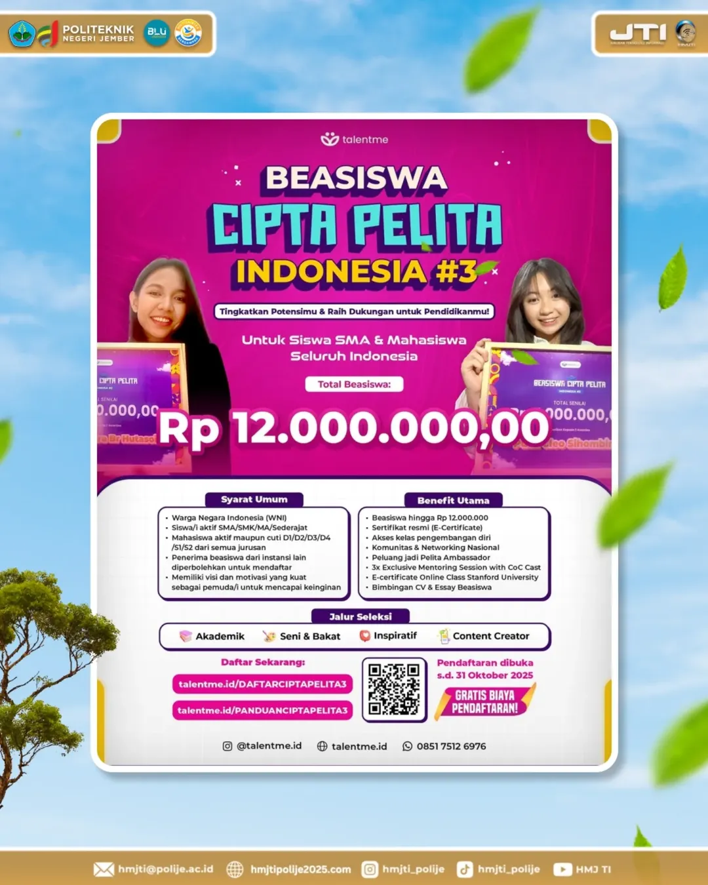
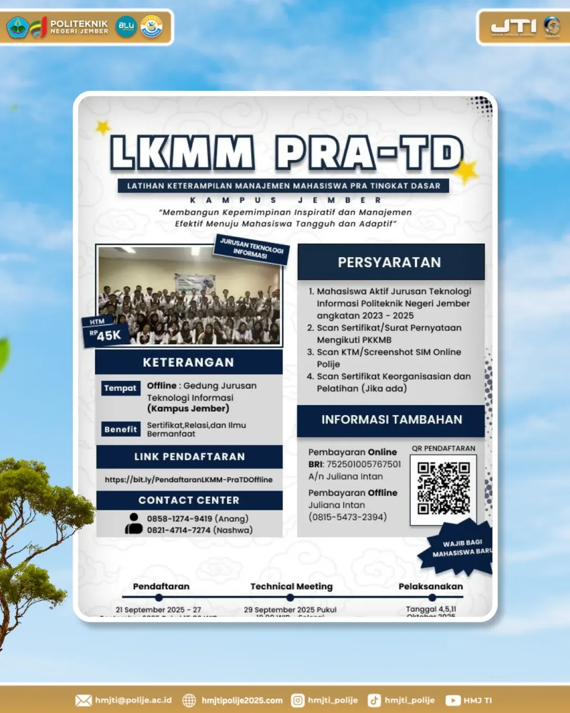
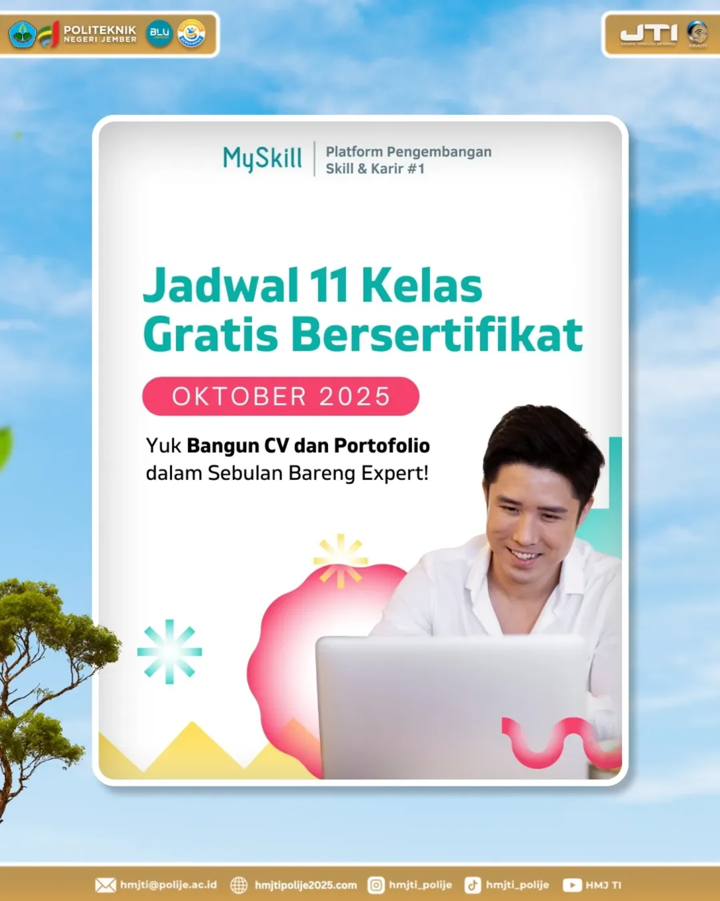

HMJ-TI

Halo, Kawan TI! Gimana liburannya hari ini? Semoga sehat selalu yaa… Kabar gembira buat kalian semua! Pendaftaran Beasiswa Datapoint 2025 sudah dibuka kembali. Jangan sampai ketinggalan ya!

Halo, Kawan TI! Beasiswa Bakti BCA 2025 resmi dibuka untuk kamu pelajar berprestasi yang ingin melanjutkan pendidikan dan mengembangkan skill.

Halo Kawan TI! Sudah siap buat OSPEK? Simak informasi lengkap mengenai OSPEK Jurusan Teknologi Informasi di sini!

Beasiswa ini dibuka untuk seluruh mahasiswa aktif yang ingin meraih pendidikan berkualitas. Yuk, daftar sekarang!

Pendaftaran KKMM tahun ini telah dibuka! Segera daftar dan persiapkan dirimu menjadi mahasiswa berprestasi.

Ayo ikuti kelas gratis dan dapatkan sertifikat resmi! Banyak topik menarik yang bisa kamu pelajari.
[BEASISWA DATAPRINT 2025] Halo, Kawan TI Gimana kabarnya hari ini? Semoga sehat selalu yaa... Kabar gembira buat kalian semua! Tahun ini kembali hadir Beasiswa DataPrint Periode 3 Tahun 2025 yang siap mendukung semangat belajar dan prestasi mahasiswa. Beasiswa ini terbuka bagi mahasiswa yang ingin terus berkembang, menambah pengalaman, sekaligus meringankan beban biaya pendidikan. Jangan lewatkan kesempatan emas ini untuk menjadi salah satu penerimanya! Periode pendaftaran: Ditutup pada 22 September 2025 Hitung mundur sudah dimulai! Hanya beberapa hari tersisa untuk menyiapkan persyaratan dan segera mendaftar. Jangan tunggu sampai detik terakhir ya Mari bersinergi dengan hati yang penuh dedikasi untuk Teknologi Informasi! TI!! PC!! Bersama-sama, kita kejar prestasi dan karya terbaik dalam dunia TI.
Yuk, ikuti perkembangan kami di: Instagram: @hmjti_polije Email: hmjti@polije.ac.id YouTube: HMJ TI TikTok: hmjti_polije Website: hmjti-polije.com #2025 #september #teknologiinformasi #politeknik #politekniknegerijember #polije #jti #himpunanmahasiswa #hmjti #foryourinformation
[BEASISWA BAKTI BCA] Halo, Kawan TI Gimana kabarnya hari ini? Semoga sehat selalu yaa... Ada kabar gembira buat kalian yang sedang menantikan kesempatan emas untuk meraih beasiswa. Tahun ini, Bakti BCA kembali membuka program Beasiswa Bakti BCA yang bisa menjadi jalan untuk mendukung perjalanan akademik sekaligus pengembangan diri kalian. Dengan beasiswa ini, kamu tidak hanya tumbuh sebagai mahasiswa berprestasi, tapi juga sebagai pribadi yang siap menghadapi dunia kerja dengan skill yang lebih matang. Periode Pendaftaran: 25 Agustus – 30 September 2025 Jangan sampai kelewatan ya, karena kesempatan ini datang hanya sekali dalam setahun! Mari bersinergi dengan hati yang penuh dedikasi untuk Teknologi Informasi! TI!! PC!! Bersama-sama, kita kejar prestasi dan karya terbaik dalam dunia TI.
Yuk, ikuti perkembangan kami di: Instagram: @hmjti_polije Email: hmjti@polije.ac.id YouTube: HMJ TI TikTok: hmjti_polije Website: hmjti-polije.com #2025 #september #teknologiinformasi #politeknik #politekniknegerijember #polije #jti #himpunanmahasiswa #hmjti #foryourinformation
[PENGUMUMAN OSPEK JURUSAN TEKNOLOGI INFORMASI 2025] Halo Kawan TI ! Gimana kabarnya hari ini? Semoga sehat selalu yaa!! Ada kabar baru nih!! Himpunan Mahasiswa Jurusan Teknologi Informasi (HMJ TI) mengundang kalian semua untuk meramaikan acara Ospek Jurusan Teknologi Informasi 2025. WELCOME TO ASTRO 2025 Rise Beyond the Stars – Saatnya Bersinar Bersama! Halo Mahasiswa Baru TI 2025! Perjalananmu sebagai bagian dari keluarga besar Teknologi Informasi POLIJE akan segera dimulai. Ospek Jurusan kali ini hadir dengan penuh semangat, bertajuk dengan tema: “Adaptasi, Sinergi, dan Transformasi Mahasiswa Baru Teknologi Informasi (ASTRO).” Tanggal : 13–14 September 2025 Waktu : 07.00 – selesai Tempat : GOR Djoeang 45 Apa yang menantimu?! Opening Speech & Inspirasi dari para Pemateri luar biasa MC seru & interaktif Fasilitas kece: Sertifikat, Tiket Speakpreneur, Tiket AOM 11.0, makan & snack! WAJIB untuk seluruh Maba TI 2025! Technical Meeting: 11 September 2025 Tempat: (menyusul) Jangan cuma jadi penonton, jadilah bintang yang bersinar bersama kami. Inilah langkah awalmu untuk tumbuh, bertransformasi, dan melampaui batas!
Contact Person Zafar (+62 819-3533-9292) Fitri (+62 823-3424-8091) Ikuti informasi kami terus di: Instagram : @hmjti_polije Tiktok : @hmjti_polije Email : hmjti@polije.ac.id Youtube : HMJ TI #BersinergiDariHati #BerdedikasiUntukTI #TI!!PC!! #ASTROJTI2025
[BEASISWA CIPTA PELITA INDONESIA #3] Halo, Kawan TI Gimana kabarnya hari ini? Semoga sehat selalu yaa... Beasiswa ini hadir untuk seluruh siswa SMA/SMK/MA dan mahasiswa di Indonesia dengan total bantuan mencapai Rp 12.000.000.000,- . Kesempatan besar ini bisa jadi jalan kamu untuk terus melangkah, mengembangkan potensi, serta membangun masa depan yang lebih cerah. Melalui program ini, tidak hanya dukungan finansial yang kamu dapatkan, tetapi juga motivasi untuk terus berprestasi, semangat belajar, serta membuktikan bahwa setiap mimpi layak diperjuangkan. Informasi lebih lanjut dan pendaftaran bisa diakses melalui QR Code atau link yang tersedia. Jangan sampai ketinggalan, manfaatkan kesempatan emas ini sekarang juga! Mari bersinergi dengan hati yang penuh dedikasi untuk Teknologi Informasi! TI!! PC!! Bersama-sama, kita kejar prestasi dan karya terbaik dalam dunia TI.
Yuk, ikuti perkembangan kami di: Instagram: @hmjti_polije Email: hmjti@polije.ac.id YouTube: HMJ TI TikTok: hmjti_polije Website: hmjti-polije.com #2025 #september #teknologiinformasi #politeknik #politekniknegerijember #polije #jti #himpunanmahasiswa #hmjti #foryourinformation
[PENDAFTARAN LKMM PRA-TD JTI 2025 DIBUKA] Halo, Kawan TI Gimana kabarnya hari ini? Semoga sehat selalu yaa... HMJ TI dengan bangga mempersembahkan LKMM Pra-Tingkat Dasar 2025 dengan tema: Membangun Kepemimpinan Inspiratif dan Manajemen Efektif Menuju Mahasiswa Tangguh dan Adaptif Kegiatan ini WAJIB untuk seluruh mahasiswa baru JTI 2025, dengan benefit: Sertifikat, Relasi, dan Ilmu Bermanfaat. Kampus Jember: Gedung JTI (Offline, HTM Rp45.000) Kampus PSDKU: Online via Zoom (FREE) Jadwal Penting - Pendaftaran: 21 – 27 September 2025 (15.00 WIB) - Technical Meeting: 29 September 2025 (Online, 19.00 WIB) Pelaksanaan: 4, 5, 11 Oktober 2025 Link Pendaftaran: Jember: bit.ly/PendaftaranLKMM-PraTDOffline PSDKU: bit.ly/PendaftaranLKMMPra-TDOnline More Info: Anang (+62 85812749419) Nashwa (+62 821-4714-7274) Mari bersinergi dengan hati yang penuh dedikasi untuk Teknologi Informasi! TI!! PC!! Bersama-sama, kita kejar prestasi dan karya terbaik dalam dunia TI.
Yuk, ikuti perkembangan kami di: Instagram: @hmjti_polije Email: hmjti@polije.ac.id YouTube: HMJ TI TikTok: hmjti_polije Website: hmjti-polije.com #2025 #september #teknologiinformasi #politeknik #politekniknegerijember #polije #jti #himpunanmahasiswa #hmjti #foryourinformation
[11 KELAS GRATIS BERSERTIFIKAT - OKTOBER] Halo, Kawan TI Gimana kabarnya hari ini? Semoga sehat selalu yaa... Saatnya upgrade skill tanpa biaya dengan ikut kelas gratis dari MySkill. Topiknya beragam banget, mulai dari: - Data Science & Analysis - Digital MarketingAccounting & Tax Audit - UI/UX Research & Design - Graphic Design - Software Engineering …dan masih banyak lagi! Yuk manfaatkan kesempatan ini, belajar bareng expert & tingkatkan skillmu sekarang! Mari bersinergi dengan hati yang penuh dedikasi untuk Teknologi Informasi! TI!! PC!! Bersama-sama, kita kejar prestasi dan karya terbaik dalam dunia TI.
Yuk, ikuti perkembangan kami di: Instagram: @hmjti_polije Email: hmjti@polije.ac.id YouTube: HMJ TI TikTok: hmjti_polije Website: hmjti-polije.com #2025 #september #teknologiinformasi #politeknik #politekniknegerijember #polije #jti #himpunanmahasiswa #hmjti #foryourinformation